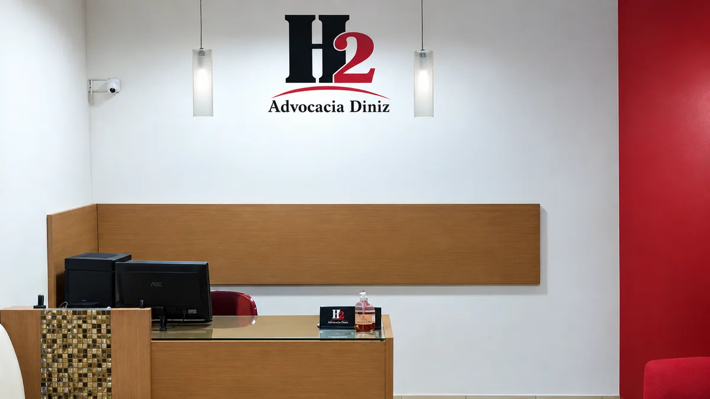

Direito Previdenciário
Seu tempo de roça pode contar para a aposentadoria.
Trabalhou no campo e ainda não se aposentou? Esse período pode ser somado ao tempo de contribuição urbana. Me chame no WhatsApp e conte o seu caso.
Falar no WhatsAppHildebrando Diniz Júnior · Advogado · Catolé do Rocha — PB
- Ex-Conselheiro Estadual da OAB/PB
- Pós-graduado em Direito Civil e Sucessões
- OAB-PB 17.617
- Escritório em Catolé do Rocha — PB
Sobre mim
Advogo em Catolé do Rocha, na H2 Advocacia Diniz.
Sou Hildebrando Diniz Júnior. Atendo na H2 Advocacia Diniz, na Rua Barão do Rio Branco.
Meu trabalho é com Direito Previdenciário — aposentadoria rural e híbrida, tempo de contribuição que o INSS não reconheceu, benefício negado. Também atuo em Direito Civil e Sucessões, área em que sou pós-graduado, e em Direito do Consumidor.
Fui Conselheiro Estadual da OAB/PB.
Áreas de atuação
Em que eu posso te ajudar
-
Aposentadoria rural e híbrida
Tempo de trabalho no campo somado ao urbano para chegar à aposentadoria.
-
Benefício negado pelo INSS
Pedido indeferido, exigência que não termina, perícia que não deu certo.
-
Tempo de contribuição
Período que o INSS não reconheceu, vínculo que não entrou na conta.
-
Inventário e partilha
Direito Civil e Sucessões, área da minha pós-graduação.
-
Direito do Consumidor
Cobrança indevida, negativação, problema com banco ou plano de saúde.
Como funciona
O que acontece depois que você me chama
-
Você me chama e conta o seu caso.
Pelo WhatsApp mesmo, com as suas palavras.
-
Eu peço os documentos que preciso ver.
Carteira de trabalho, carnê, o que o INSS respondeu, o que você tiver guardado.
-
Depois de analisar, eu te digo o que dá para fazer — e o que não dá.
Sem promessa. Se o seu caso não tem caminho, você vai saber por mim.
Dúvidas frequentes
O que as pessoas costumam perguntar
Trabalhei na roça quando era novo. Isso conta?
Que documentos eu preciso levar?
O INSS negou o meu pedido. Acabou?
Onde me encontrar
H2 Advocacia Diniz
Rua Barão do Rio Branco, 763
Catolé do Rocha — PB
Atendimento com hora marcada pelo WhatsApp.
Abrir no Google MapsConte o seu caso.
Me mande uma mensagem com o que aconteceu. Eu leio e te respondo.
Falar no WhatsApp